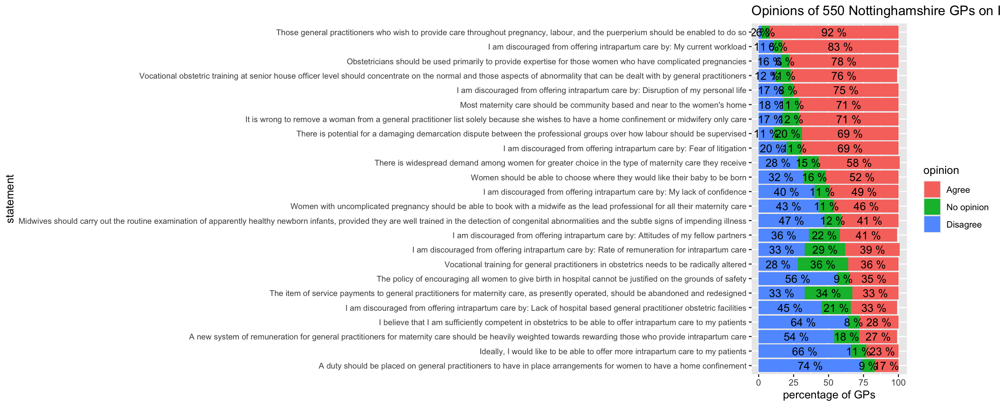
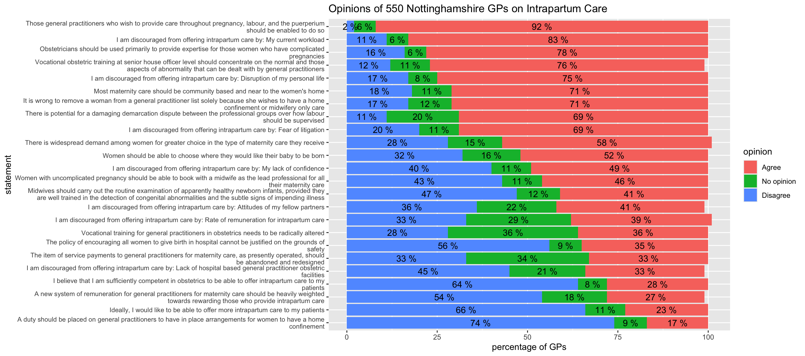
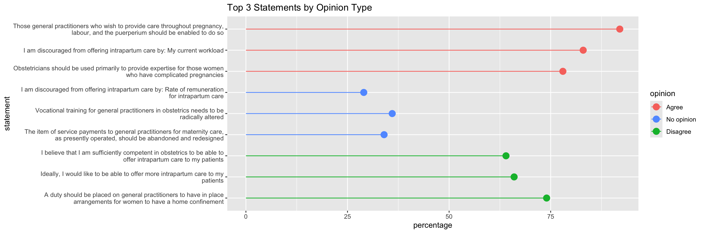

(Thanks to my fellow students Julio Espinosa Rifel and Veli Mahlangu for your suggestions, which I've used to improve my initial post.)
Our task was to take data from this article about general practitioners' opinions on intrapartum care (The British Medical Journal, 1994) and display it as plots to make it easier for the reader to understand.
Here are the first few rows from the original table - there are actually 24 statements.
| No (%) of general practitioners | |||
| Statement | Agree | No opinion | Disagree |
| Ideally, I would like to be able to offer more intrapartum care to my patients | 124 (23) | 61 (11) | 358 (66) |
| I believe that I am sufficiently competent in obstetrics to be able to offer intrapartum care to my patients | 153 (28) | 42 (8) | 349 (64) |
| I am discouraged from offering intrapartum care by: My lack of confidence | 267 (49) | 62 (11) | 217 (40) |
I used Google Sheets to prepare the data to import into RStudio.
I used these functions to extract the number of GPs and the percentage of GPs from each cell.
This function extracts the number of GPs by taking everything to the left of the space.
= LEFT(B2, FIND(" ", B2))
This function extracts the percentage of GPs by taking everything between the brackets.
= VALUE(MID(B2, FIND("(", B2) + 1, LEN(B2) - FIND("(", B2) - 1))
I decided to check that the percentages for each statement did actually all add to around 100% - I used this function to add the percentages from "Agree", "No opinion" and "Disagree".
= H2 + I2 + J2
This showed that all the percentages added to 100 (or 99 or 101 because of rounding) except for row 8, which had these values.
| Statement | Agree | No opinion | Disagree | total percentage |
| I am discouraged from offering intrapartum care by: Attitudes of my fellow partners | 203 (37) | 109 (20) | 178 (33) | 90 |
The percentages added to 90, so I recalculated them for that row - here are the new values, which now add to 99 (because of rounding).
| Statement | Agree | No opinion | Disagree | total percentage |
| I am discouraged from offering intrapartum care by: Attitudes of my fellow partners | 203 (41) | 109 (22) | 178 (36) | 99 |
Many statements actually finished the sentence beginning "I am discouraged from offering intrapartum care by:" but this wasn't clear in the table, so I made all of these statements complete in themselves.
Here are the first few rows of the prepared data.
| Statement | Agree (raw) | No opinion (raw) | Disagree (raw) | Agree (num) | No opinion (num) | Disagree (num) | Agree (perc) | No opinion (perc) | Disagree (perc) | total percentage |
| Ideally, I would like to be able to offer more intrapartum care to my patients | 124 (23) | 61 (11) | 358 (66) | 124 | 61 | 358 | 23 | 11 | 66 | 100 |
| I believe that I am sufficiently competent in obstetrics to be able to offer intrapartum care to my patients | 153 (28) | 42 (8) | 349 (64) | 153 | 42 | 349 | 28 | 8 | 64 | 100 |
| I am discouraged from offering intrapartum care by: My lack of confidence | 267 (49) | 62 (11) | 217 (40) | 267 | 62 | 217 | 49 | 11 | 40 | 100 |
I exported the data as a CSV file then imported it into RStudio (University of Essex Online, 2026).
I wanted to visually show which statements the GPs felt most strongly about, so I decided to summarise the data for the reader by making a diverging stacked bar chart.
I copied the "Agree" column to a column called "order" to make it easier to order the bars in the bar chart.
responses$order <- responses$Agree
I made a new tibble called "responses_summary" which put the opinion type ("Agree", "No opinion" or "Disagree") into one column (Bader, M. K. F. and Leuzinger, S., 2024).
responses_summary <- responses %>%
select(Statement, Agree, `No opinion`, Disagree, order) %>%
pivot_longer(
cols = c("Agree", "No opinion", "Disagree"),
names_to = "opinion",
values_to = "percentage"
)
I changed the "opinion" column to a factor variable in the order I wanted the opinion types to be displayed.
responses_summary$opinion = factor(responses_summary$opinion, levels = c("Agree", "No opinion", "Disagree"))
I plotted the results, ordered by the "Agree" percentage.
responses_summary %>% ggplot(aes(x = percentage, y = reorder(Statement, order), fill = opinion)) + geom_col() + theme(axis.text.y = element_text(size = 8)) + geom_text(aes(label = paste(percentage, "%")), position = position_stack(vjust = 0.5)) + labs(title = "Opinions of 550 Nottinghamshire GPs on Intrapartum Care", x = "percentage of GPs", y = "statement")

I decided to improve the bar chart by wrapping the text of the statements (Wickham, H., Mine, C.R. and Grolemund, G., 2023).
responses_summary %>% ggplot(aes(x = percentage, y = reorder(Statement, order), fill = opinion)) + geom_col() + scale_y_discrete(labels = function(y) str_wrap(y, width = 105)) + theme(axis.text.y = element_text(size = 8)) + geom_text(aes(label = paste(percentage, "%")), position = position_stack(vjust = 0.5)) + labs(title = "Opinions of 550 Nottinghamshire GPs on Intrapartum Care", x = "percentage of GPs", y = "statement")

The bar chart shows clearly which statements the GPs strongly agreed or disagreed with. If you read the statements, it also shows that the statements the GPs felt the most strongly about were statements involving their freedom of choice and their work load. They agreed strongly with statements about having more choice and less work, but disagreed strongly with statements about having less choice and more work. Perhaps surprisingly, they often had "no opinion" about statements involving payments.
I also used a lollipop chart to show the 3 statements from each opinion type which had the highest percentages, in other words the 3 statements which had the highest "Agree" percentage, the 3 statements which had the highest "No opinion" percentage, and the 3 statements which had the highest "Disagree" percentage.
I made a new tibble called "lollipop_data" with the top 3 statements for each opinion type.
lollipop_data <- responses_summary %>% group_by(opinion) %>% slice_max(percentage, n = 3)
I plotted the results, grouped by opinion type.
lollipop_data %>%
ggplot(aes(x = percentage, y = reorder(Statement, order), color = opinion)) +
geom_segment(aes(x = 0, xend = percentage)) +
geom_point(size = 4) +
scale_y_discrete(labels = function(y) str_wrap(y, width = 75)) +
scale_color_discrete(breaks = c("Agree", "No opinion", "Disagree")) +
labs(title = "Top 3 Statements by Opinion Type", x = "percentage", y = "statement")

Presenting the data in this way, which shows which statements the GPs feel most strongly about, can help decision-makers choose which areas of improvement to focus on.
When completing this task I learned to use many features of Rstudio and ggplot2, particularly preparing data and using advanced features for formatting bar charts.
The British Medical Journal (1994) Opinions of general practioners in Nottinghamshire about provision of intrapartum care. Available at: https://www.bmj.com/content/309/6957/777 (Accessed: 27 February 2026).
Bader, M. K. F. and Leuzinger, S. (2024) R-ticulate: A Beginner’s Guide to Data Analysis for Natural Scientists. Hoboken: Wiley.
Wickham, H., Mine, C.R. and Grolemund, G. (2023) R for Data Science: Import, Tidy, Transform, Visualize, and Model Data. California: O'Reilly.
University of Essex Online (2026) Data Management in R. Available at: https://www.my-course.co.uk/mod/scorm/player.php?a=23384&scoid=46852 (Accessed: 27 February 2026).